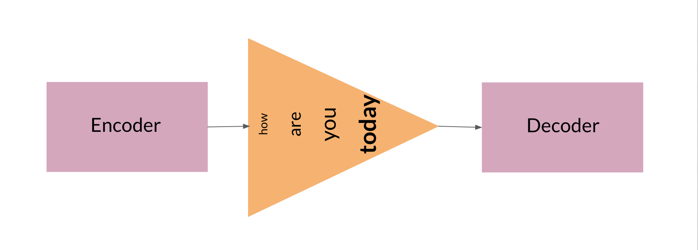
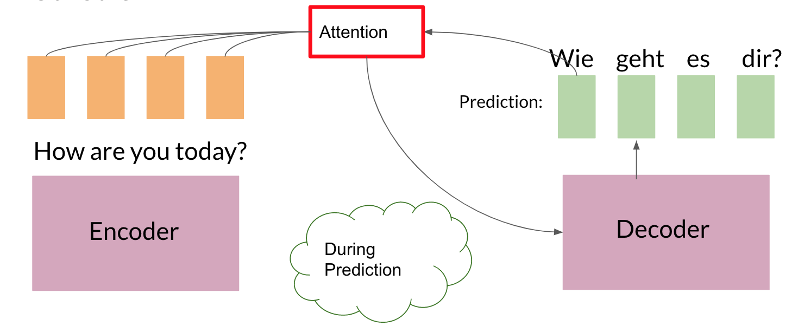
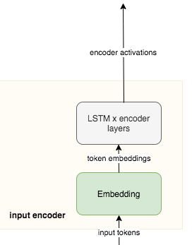

Due to the Coursera Honor Code, I cannot provide the solutions to the assignments.
This notebook is the original notebook provided by the course
It is setup to run without stopping for errors.
It is also likely to be out of date as the course has had some updates since I took it.
Although I aced the course this assignment was the most time consuming.
Good luck with the assignment it should make we a better programmer.
It is also a good idea to go over it a few times until we can do it easily.
Welcome to the first assignment of Course 4. Here, you will build an English-to-German neural machine translation (NMT) model using Long Short-Term Memory (LSTM) networks with attention. Machine translation is an important task in natural language processing and could be useful not only for translating one language to another but also for word sense disambiguation (e.g. determining whether the word “bank” refers to the financial bank, or the land alongside a river). Implementing this using just a Recurrent Neural Network (RNN) with LSTMs can work for short to medium length sentences but can result in vanishing gradients for very long sequences. To solve this, you will be adding an attention mechanism to allow the decoder to access all relevant parts of the input sentence regardless of its length. By completing this assignment, you will:
learn how to preprocess your training and evaluation data
implement an encoder-decoder system with attention
understand how attention works
build the NMT model from scratch using Trax
generate translations using greedy and Minimum Bayes Risk (MBR) decoding ## Outline
We will first start by importing the packages we will use in this assignment. As in the previous course of this specialization, we will use the Trax library created and maintained by the Google Brain team to do most of the heavy lifting. It provides submodules to fetch and process the datasets, as well as build and train the model.
from termcolor import coloredimport randomimport numpy as npimport traxfrom trax import layers as tlfrom trax.fastmath import numpy as fastnpfrom trax.supervised import training!pip list| grep trax
2025-02-06 21:04:21.065529: E external/local_xla/xla/stream_executor/cuda/cuda_fft.cc:477] Unable to register cuFFT factory: Attempting to register factory for plugin cuFFT when one has already been registered
WARNING: All log messages before absl::InitializeLog() is called are written to STDERR
E0000 00:00:1738868661.082575 1093516 cuda_dnn.cc:8310] Unable to register cuDNN factory: Attempting to register factory for plugin cuDNN when one has already been registered
E0000 00:00:1738868661.088469 1093516 cuda_blas.cc:1418] Unable to register cuBLAS factory: Attempting to register factory for plugin cuBLAS when one has already been registered
trax 1.4.1
Next, we will import the dataset we will use to train the model. To meet the storage constraints in this lab environment, we will just use a small dataset from Opus, a growing collection of translated texts from the web. Particularly, we will get an English to German translation subset specified as opus/medical which has medical related texts. If storage is not an issue, you can opt to get a larger corpus such as the English to German translation dataset from ParaCrawl, a large multi-lingual translation dataset created by the European Union. Both of these datasets are available via Tensorflow Datasets (TFDS) and you can browse through the other available datasets here. We have downloaded the data for you in the data/ directory of your workspace. As you’ll see below, you can easily access this dataset from TFDS with trax.data.TFDS. The result is a python generator function yielding tuples. Use the keys argument to select what appears at which position in the tuple. For example, keys=('en', 'de') below will return pairs as (English sentence, German sentence).
# Get generator function for the training set# This will download the train dataset if no data_dir is specified.train_stream_fn = trax.data.TFDS('opus/medical', data_dir='./data/', keys=('en', 'de'), eval_holdout_size=0.01, # 1% for eval train=True)# Get generator function for the eval seteval_stream_fn = trax.data.TFDS('opus/medical', data_dir='./data/', keys=('en', 'de'), eval_holdout_size=0.01, # 1% for eval train=False)
/home/oren/work/notes/notes-nlp/.venv/lib/python3.10/site-packages/jax/_src/xla_bridge.py:1234: UserWarning: jax.host_count has been renamed to jax.process_count. This alias will eventually be removed; please update your code.
warnings.warn(
I0000 00:00:1738868712.221304 1093516 gpu_device.cc:2022] Created device /job:localhost/replica:0/task:0/device:GPU:0 with 5870 MB memory: -> device: 0, name: NVIDIA GeForce RTX 3070 Laptop GPU, pci bus id: 0000:01:00.0, compute capability: 8.6
Notice that TFDS returns a generator function, not a generator. This is because in Python, you cannot reset generators so you cannot go back to a previously yielded value. During deep learning training, you use Stochastic Gradient Descent and don’t actually need to go back – but it is sometimes good to be able to do that, and that’s where the functions come in. It is actually very common to use generator functions in Python – e.g., zip is a generator function. You can read more about Python generators to understand why we use them. Let’s print a a sample pair from our train and eval data. Notice that the raw ouput is represented in bytes (denoted by the b' prefix) and these will be converted to strings internally in the next steps.
train_stream = train_stream_fn()print(colored('train data (en, de) tuple:', 'red'), next(train_stream))print()eval_stream = eval_stream_fn()print(colored('eval data (en, de) tuple:', 'red'), next(eval_stream))
---------------------------------------------------------------------------NotFoundError Traceback (most recent call last)
Cell In[3], line 2 1 train_stream = train_stream_fn()
----> 2print(colored('train data (en, de) tuple:', 'red'), next(train_stream))
3print()
5 eval_stream = eval_stream_fn()
File ~/work/notes/notes-nlp/.venv/lib/python3.10/site-packages/trax/data/tf_inputs.py:354, in TFDS.<locals>.gen(***failed resolving arguments***) 352defgen(generator=None):
353del generator
--> 354for example in fastmath.dataset_as_numpy(dataset):
355yield example
File ~/work/notes/notes-nlp/.venv/lib/python3.10/site-packages/trax/fastmath/jax.py:154, in _dataset_as_numpy(ds, batch_size) 151yield single_example
152exceptAttributeError:
153# In TF 1.X there is not dense_to_ragged_batch: fallback.--> 154for example in tfds.as_numpy(ds):
155yield example
File ~/work/notes/notes-nlp/.venv/lib/python3.10/site-packages/tensorflow_datasets/core/dataset_utils.py:82, in _eager_dataset_iterator(ds) 81def_eager_dataset_iterator(ds: tf.data.Dataset) -> Iterator[NumpyElem]:
---> 82for elem in ds:
83yield tree_utils.map_structure(_elem_to_numpy_eager, elem)
File ~/work/notes/notes-nlp/.venv/lib/python3.10/site-packages/tensorflow/python/data/ops/iterator_ops.py:826, in OwnedIterator.__next__(self) 824def__next__(self):
825try:
--> 826returnself._next_internal() 827except errors.OutOfRangeError:
828raiseStopIteration
File ~/work/notes/notes-nlp/.venv/lib/python3.10/site-packages/tensorflow/python/data/ops/iterator_ops.py:776, in OwnedIterator._next_internal(self) 773# TODO(b/77291417): This runs in sync mode as iterators use an error status 774# to communicate that there is no more data to iterate over. 775with context.execution_mode(context.SYNC):
--> 776 ret =gen_dataset_ops.iterator_get_next( 777self._iterator_resource, 778output_types=self._flat_output_types, 779output_shapes=self._flat_output_shapes) 781try:
782# Fast path for the case `self._structure` is not a nested structure. 783returnself._element_spec._from_compatible_tensor_list(ret) # pylint: disable=protected-access
File ~/work/notes/notes-nlp/.venv/lib/python3.10/site-packages/tensorflow/python/ops/gen_dataset_ops.py:3086, in iterator_get_next(iterator, output_types, output_shapes, name) 3084return _result
3085except _core._NotOkStatusException as e:
-> 3086_ops.raise_from_not_ok_status(e,name) 3087except _core._FallbackException:
3088pass
File ~/work/notes/notes-nlp/.venv/lib/python3.10/site-packages/tensorflow/python/framework/ops.py:6002, in raise_from_not_ok_status(e, name) 6000defraise_from_not_ok_status(e, name) -> NoReturn:
6001 e.message += (" name: "+str(name if name isnotNoneelse""))
-> 6002raise core._status_to_exception(e) fromNoneNotFoundError: {{function_node __wrapped__IteratorGetNext_output_types_2_device_/job:localhost/replica:0/task:0/device:CPU:0}} data/opus/medical/0.1.0/opus-train.tfrecord-00000-of-00002; No such file or directory [Op:IteratorGetNext] name:
## 1.2 Tokenization and Formatting
Now that we have imported our corpus, we will be preprocessing the sentences into a format that our model can accept. This will be composed of several steps:
Tokenizing the sentences using subword representations: As you’ve learned in the earlier courses of this specialization, we want to represent each sentence as an array of integers instead of strings. For our application, we will use subword representations to tokenize our sentences. This is a common technique to avoid out-of-vocabulary words by allowing parts of words to be represented separately. For example, instead of having separate entries in your vocabulary for –“fear”, “fearless”, “fearsome”, “some”, and “less”–, you can simply store –“fear”, “some”, and “less”– then allow your tokenizer to combine these subwords when needed. This allows it to be more flexible so you won’t have to save uncommon words explicitly in your vocabulary (e.g. stylebender, nonce, etc). Tokenizing is done with the trax.data.Tokenize() command and we have provided you the combined subword vocabulary for English and German (i.e. ende_32k.subword) saved in the data directory. Feel free to open this file to see how the subwords look like.
# global variables that state the filename and directory of the vocabulary fileVOCAB_FILE ='ende_32k.subword'VOCAB_DIR ='data/'# Tokenize the dataset.tokenized_train_stream = trax.data.Tokenize(vocab_file=VOCAB_FILE, vocab_dir=VOCAB_DIR)(train_stream)tokenized_eval_stream = trax.data.Tokenize(vocab_file=VOCAB_FILE, vocab_dir=VOCAB_DIR)(eval_stream)
---------------------------------------------------------------------------NameError Traceback (most recent call last)
Cell In[4], line 7 5# Tokenize the dataset. 6 tokenized_train_stream = trax.data.Tokenize(vocab_file=VOCAB_FILE, vocab_dir=VOCAB_DIR)(train_stream)
----> 7 tokenized_eval_stream = trax.data.Tokenize(vocab_file=VOCAB_FILE, vocab_dir=VOCAB_DIR)(eval_stream)
NameError: name 'eval_stream' is not defined
Append an end-of-sentence token to each sentence: We will assign a token (i.e. in this case 1) to mark the end of a sentence. This will be useful in inference/prediction so we’ll know that the model has completed the translation.
# Append EOS at the end of each sentence.# Integer assigned as end-of-sentence (EOS)EOS =1# generator helper function to append EOS to each sentencedef append_eos(stream):for (inputs, targets) in stream: inputs_with_eos =list(inputs) + [EOS] targets_with_eos =list(targets) + [EOS]yield np.array(inputs_with_eos), np.array(targets_with_eos)# append EOS to the train datatokenized_train_stream = append_eos(tokenized_train_stream)# append EOS to the eval datatokenized_eval_stream = append_eos(tokenized_eval_stream)
---------------------------------------------------------------------------NameError Traceback (most recent call last)
Cell In[5], line 17 14 tokenized_train_stream = append_eos(tokenized_train_stream)
16# append EOS to the eval data---> 17 tokenized_eval_stream = append_eos(tokenized_eval_stream)
NameError: name 'tokenized_eval_stream' is not defined
Filter long sentences: We will place a limit on the number of tokens per sentence to ensure we won’t run out of memory. This is done with the trax.data.FilterByLength() method and you can see its syntax below.
# Filter too long sentences to not run out of memory.# length_keys=[0, 1] means we filter both English and German sentences, so# both much be not longer that 256 tokens for training / 512 for eval.filtered_train_stream = trax.data.FilterByLength( max_length=256, length_keys=[0, 1])(tokenized_train_stream)filtered_eval_stream = trax.data.FilterByLength( max_length=512, length_keys=[0, 1])(tokenized_eval_stream)# print a sample input-target pair of tokenized sentencestrain_input, train_target =next(filtered_train_stream)print(colored(f'Single tokenized example input:', 'red' ), train_input)print(colored(f'Single tokenized example target:', 'red'), train_target)
---------------------------------------------------------------------------NameError Traceback (most recent call last)
Cell In[6], line 7 1# Filter too long sentences to not run out of memory. 2# length_keys=[0, 1] means we filter both English and German sentences, so 3# both much be not longer that 256 tokens for training / 512 for eval. 4 filtered_train_stream = trax.data.FilterByLength(
5 max_length=256, length_keys=[0, 1])(tokenized_train_stream)
6 filtered_eval_stream = trax.data.FilterByLength(
----> 7 max_length=512, length_keys=[0, 1])(tokenized_eval_stream)
9# print a sample input-target pair of tokenized sentences 10 train_input, train_target =next(filtered_train_stream)
NameError: name 'tokenized_eval_stream' is not defined
## 1.3 tokenize & detokenize helper functions
Given any data set, you have to be able to map words to their indices, and indices to their words. The inputs and outputs to your trax models are usually tensors of numbers where each number corresponds to a word. If you were to process your data manually, you would have to make use of the following:
word2Ind: a dictionary mapping the word to its index.
ind2Word: a dictionary mapping the index to its word.
word2Count: a dictionary mapping the word to the number of times it appears.
num_words: total number of words that have appeared.
Since you have already implemented these in previous assignments of the specialization, we will provide you with helper functions that will do this for you. Run the cell below to get the following functions:
tokenize(): converts a text sentence to its corresponding token list (i.e. list of indices). Also converts words to subwords (parts of words).
detokenize(): converts a token list to its corresponding sentence (i.e. string).
# Setup helper functions for tokenizing and detokenizing sentencesdef tokenize(input_str, vocab_file=None, vocab_dir=None):"""Encodes a string to an array of integers Args: input_str (str): human-readable string to encode vocab_file (str): filename of the vocabulary text file vocab_dir (str): path to the vocabulary file Returns: numpy.ndarray: tokenized version of the input string """# Set the encoding of the "end of sentence" as 1 EOS =1# Use the trax.data.tokenize method. It takes streams and returns streams,# we get around it by making a 1-element stream with `iter`. inputs =next(trax.data.tokenize(iter([input_str]), vocab_file=vocab_file, vocab_dir=vocab_dir))# Mark the end of the sentence with EOS inputs =list(inputs) + [EOS]# Adding the batch dimension to the front of the shape batch_inputs = np.reshape(np.array(inputs), [1, -1])return batch_inputsdef detokenize(integers, vocab_file=None, vocab_dir=None):"""Decodes an array of integers to a human readable string Args: integers (numpy.ndarray): array of integers to decode vocab_file (str): filename of the vocabulary text file vocab_dir (str): path to the vocabulary file Returns: str: the decoded sentence. """# Remove the dimensions of size 1 integers =list(np.squeeze(integers))# Set the encoding of the "end of sentence" as 1 EOS =1# Remove the EOS to decode only the original tokensif EOS in integers: integers = integers[:integers.index(EOS)] return trax.data.detokenize(integers, vocab_file=vocab_file, vocab_dir=vocab_dir)
Let’s see how we might use these functions:
# As declared earlier:# VOCAB_FILE = 'ende_32k.subword'# VOCAB_DIR = 'data/'# Detokenize an input-target pair of tokenized sentencesprint(colored(f'Single detokenized example input:', 'red'), detokenize(train_input, vocab_file=VOCAB_FILE, vocab_dir=VOCAB_DIR))print(colored(f'Single detokenized example target:', 'red'), detokenize(train_target, vocab_file=VOCAB_FILE, vocab_dir=VOCAB_DIR))print()# Tokenize and detokenize a word that is not explicitly saved in the vocabulary file.# See how it combines the subwords -- 'hell' and 'o'-- to form the word 'hello'.print(colored(f"tokenize('hello'): ", 'green'), tokenize('hello', vocab_file=VOCAB_FILE, vocab_dir=VOCAB_DIR))print(colored(f"detokenize([17332, 140, 1]): ", 'green'), detokenize([17332, 140, 1], vocab_file=VOCAB_FILE, vocab_dir=VOCAB_DIR))
---------------------------------------------------------------------------NameError Traceback (most recent call last)
Cell In[8], line 6 1# As declared earlier: 2# VOCAB_FILE = 'ende_32k.subword' 3# VOCAB_DIR = 'data/' 4 5# Detokenize an input-target pair of tokenized sentences----> 6print(colored(f'Single detokenized example input:', 'red'), detokenize(train_input, vocab_file=VOCAB_FILE, vocab_dir=VOCAB_DIR))
7print(colored(f'Single detokenized example target:', 'red'), detokenize(train_target, vocab_file=VOCAB_FILE, vocab_dir=VOCAB_DIR))
8print()
NameError: name 'train_input' is not defined
## 1.4 Bucketing
Bucketing the tokenized sentences is an important technique used to speed up training in NLP. Here is a nice article describing it in detail but the gist is very simple. Our inputs have variable lengths and you want to make these the same when batching groups of sentences together. One way to do that is to pad each sentence to the length of the longest sentence in the dataset. This might lead to some wasted computation though. For example, if there are multiple short sentences with just two tokens, do we want to pad these when the longest sentence is composed of a 100 tokens? Instead of padding with 0s to the maximum length of a sentence each time, we can group our tokenized sentences by length and bucket, as on this image (from the article above):
alt text
We batch the sentences with similar length together (e.g. the blue sentences in the image above) and only add minimal padding to make them have equal length (usually up to the nearest power of two). This allows to waste less computation when processing padded sequences. In Trax, it is implemented in the bucket_by_length function.
# Bucketing to create streams of batches.# Buckets are defined in terms of boundaries and batch sizes.# Batch_sizes[i] determines the batch size for items with length < boundaries[i]# So below, we'll take a batch of 256 sentences of length < 8, 128 if length is# between 8 and 16, and so on -- and only 2 if length is over 512.boundaries = [8, 16, 32, 64, 128, 256, 512]batch_sizes = [256, 128, 64, 32, 16, 8, 4, 2]# Create the generators.train_batch_stream = trax.data.BucketByLength( boundaries, batch_sizes, length_keys=[0, 1] # As before: count inputs and targets to length.)(filtered_train_stream)eval_batch_stream = trax.data.BucketByLength( boundaries, batch_sizes, length_keys=[0, 1] # As before: count inputs and targets to length.)(filtered_eval_stream)# Add masking for the padding (0s).train_batch_stream = trax.data.AddLossWeights(id_to_mask=0)(train_batch_stream)eval_batch_stream = trax.data.AddLossWeights(id_to_mask=0)(eval_batch_stream)
---------------------------------------------------------------------------NameError Traceback (most recent call last)
Cell In[9], line 19 10# Create the generators. 11 train_batch_stream = trax.data.BucketByLength(
12 boundaries, batch_sizes,
13 length_keys=[0, 1] # As before: count inputs and targets to length. 14 )(filtered_train_stream)
16 eval_batch_stream = trax.data.BucketByLength(
17 boundaries, batch_sizes,
18 length_keys=[0, 1] # As before: count inputs and targets to length.---> 19 )(filtered_eval_stream)
21# Add masking for the padding (0s). 22 train_batch_stream = trax.data.AddLossWeights(id_to_mask=0)(train_batch_stream)
NameError: name 'filtered_eval_stream' is not defined
## 1.5 Exploring the data
We will now be displaying some of our data. You will see that the functions defined above (i.e. tokenize() and detokenize()) do the same things you have been doing again and again throughout the specialization. We gave these so you can focus more on building the model from scratch. Let us first get the data generator and get one batch of the data.
input_batch, target_batch, mask_batch =next(train_batch_stream)# let's see the data type of a batchprint("input_batch data type: ", type(input_batch))print("target_batch data type: ", type(target_batch))# let's see the shape of this particular batch (batch length, sentence length)print("input_batch shape: ", input_batch.shape)print("target_batch shape: ", target_batch.shape)
---------------------------------------------------------------------------StopIteration Traceback (most recent call last)
Cell In[10], line 1----> 1 input_batch, target_batch, mask_batch =next(train_batch_stream) 3# let's see the data type of a batch 4print("input_batch data type: ", type(input_batch))
StopIteration:
The input_batch and target_batch are Numpy arrays consisting of tokenized English sentences and German sentences respectively. These tokens will later be used to produce embedding vectors for each word in the sentence (so the embedding for a sentence will be a matrix). The number of sentences in each batch is usually a power of 2 for optimal computer memory usage.
We can now visually inspect some of the data. You can run the cell below several times to shuffle through the sentences. Just to note, while this is a standard data set that is used widely, it does have some known wrong translations. With that, let’s pick a random sentence and print its tokenized representation.
# pick a random index less than the batch size.index = random.randrange(len(input_batch))# use the index to grab an entry from the input and target batchprint(colored('THIS IS THE ENGLISH SENTENCE: \n', 'red'), detokenize(input_batch[index], vocab_file=VOCAB_FILE, vocab_dir=VOCAB_DIR), '\n')print(colored('THIS IS THE TOKENIZED VERSION OF THE ENGLISH SENTENCE: \n ', 'red'), input_batch[index], '\n')print(colored('THIS IS THE GERMAN TRANSLATION: \n', 'red'), detokenize(target_batch[index], vocab_file=VOCAB_FILE, vocab_dir=VOCAB_DIR), '\n')print(colored('THIS IS THE TOKENIZED VERSION OF THE GERMAN TRANSLATION: \n', 'red'), target_batch[index], '\n')
---------------------------------------------------------------------------NameError Traceback (most recent call last)
Cell In[11], line 2 1# pick a random index less than the batch size.----> 2 index = random.randrange(len(input_batch))
4# use the index to grab an entry from the input and target batch 5print(colored('THIS IS THE ENGLISH SENTENCE: \n', 'red'), detokenize(input_batch[index], vocab_file=VOCAB_FILE, vocab_dir=VOCAB_DIR), '\n')
NameError: name 'input_batch' is not defined
# Part 2: Neural Machine Translation with Attention
Now that you have the data generators and have handled the preprocessing, it is time for you to build the model. You will be implementing a neural machine translation model from scratch with attention.
## 2.1 Attention Overview
The model we will be building uses an encoder-decoder architecture. This Recurrent Neural Network (RNN) will take in a tokenized version of a sentence in its encoder, then passes it on to the decoder for translation. As mentioned in the lectures, just using a a regular sequence-to-sequence model with LSTMs will work effectively for short to medium sentences but will start to degrade for longer ones. You can picture it like the figure below where all of the context of the input sentence is compressed into one vector that is passed into the decoder block. You can see how this will be an issue for very long sentences (e.g. 100 tokens or more) because the context of the first parts of the input will have very little effect on the final vector passed to the decoder.

Adding an attention layer to this model avoids this problem by giving the decoder access to all parts of the input sentence. To illustrate, let’s just use a 4-word input sentence as shown below. Remember that a hidden state is produced at each timestep of the encoder (represented by the orange rectangles). These are all passed to the attention layer and each are given a score given the current activation (i.e. hidden state) of the decoder. For instance, let’s consider the figure below where the first prediction “Wie” is already made. To produce the next prediction, the attention layer will first receive all the encoder hidden states (i.e. orange rectangles) as well as the decoder hidden state when producing the word “Wie” (i.e. first green rectangle). Given these information, it will score each of the encoder hidden states to know which one the decoder should focus on to produce the next word. The result of the model training might have learned that it should align to the second encoder hidden state and subsequently assigns a high probability to the word “geht”. If we are using greedy decoding, we will output the said word as the next symbol, then restart the process to produce the next word until we reach an end-of-sentence prediction.

There are different ways to implement attention and the one we’ll use for this assignment is the Scaled Dot Product Attention which has the form:
You will dive deeper into this equation in the next week but for now, you can think of it as computing scores using queries (Q) and keys (K), followed by a multiplication of values (V) to get a context vector at a particular timestep of the decoder. This context vector is fed to the decoder RNN to get a set of probabilities for the next predicted word. The division by square root of the keys dimensionality (\sqrt{d_k}) is for improving model performance and you’ll also learn more about it next week. For our machine translation application, the encoder activations (i.e. encoder hidden states) will be the keys and values, while the decoder activations (i.e. decoder hidden states) will be the queries.
You will see in the upcoming sections that this complex architecture and mechanism can be implemented with just a few lines of code. Let’s get started!
## 2.2 Helper functions
We will first implement a few functions that we will use later on. These will be for the input encoder, pre-attention decoder, and preparation of the queries, keys, values, and mask.
2.2.1 Input encoder
The input encoder runs on the input tokens, creates its embeddings, and feeds it to an LSTM network. This outputs the activations that will be the keys and values for attention. It is a Serial network which uses:
tl.Embedding: Converts each token to its vector representation. In this case, it is the the size of the vocabulary by the dimension of the model: tl.Embedding(vocab_size, d_model). vocab_size is the number of entries in the given vocabulary. d_model is the number of elements in the word embedding.
tl.LSTM: LSTM layer of size d_model. We want to be able to configure how many encoder layers we have so remember to create LSTM layers equal to the number of the n_encoder_layers parameter.

### Exercise 01
Instructions: Implement the input_encoder_fn function.
# UNQ_C1# GRADED FUNCTIONdef input_encoder_fn(input_vocab_size, d_model, n_encoder_layers):""" Input encoder runs on the input sentence and creates activations that will be the keys and values for attention. Args: input_vocab_size: int: vocab size of the input d_model: int: depth of embedding (n_units in the LSTM cell) n_encoder_layers: int: number of LSTM layers in the encoder Returns: tl.Serial: The input encoder """# create a serial network input_encoder = tl.Serial( ### START CODE HERE (REPLACE INSTANCES OF `None` WITH YOUR CODE) #### create an embedding layer to convert tokens to vectorsNone,# feed the embeddings to the LSTM layers. It is a stack of n_encoder_layers LSTM layers [Nonefor _ inNone]### END CODE HERE ### )return input_encoder
Note: To make this notebook more neat, we moved the unit tests to a separate file called w1_unittest.py. Feel free to open it from your workspace if needed. We have placed comments in that file to indicate which functions are testing which part of the assignment (e.g. test_input_encoder_fn() has the unit tests for UNQ_C1).
# BEGIN UNIT TESTimport w1_unittestw1_unittest.test_input_encoder_fn(input_encoder_fn)# END UNIT TEST
---------------------------------------------------------------------------TypeError Traceback (most recent call last)
Cell In[13], line 4 1# BEGIN UNIT TEST 2importw1_unittest----> 4w1_unittest.test_input_encoder_fn(input_encoder_fn) 5# END UNIT TEST
File ~/work/notes/notes-nlp/posts/c4w1/w1_unittest.py:98, in test_input_encoder_fn(input_encoder_fn) 95 d_model =2 96 n_encoder_layers =6---> 98 encoder =target(input_vocab_size,d_model,n_encoder_layers) 100 lstms ="\n".join([f' LSTM_{d_model}'] * n_encoder_layers)
102 expected =f"Serial[\n Embedding_{input_vocab_size}_{d_model}\n{lstms}\n]"
Cell In[12], line 23, in input_encoder_fn(input_vocab_size, d_model, n_encoder_layers) 4""" Input encoder runs on the input sentence and creates 5activations that will be the keys and values for attention. 6 (...) 12 tl.Serial: The input encoder 13""" 15# create a serial network 16 input_encoder = tl.Serial(
17 18### START CODE HERE (REPLACE INSTANCES OF `None` WITH YOUR CODE) ### 19# create an embedding layer to convert tokens to vectors 20None,
21 22# feed the embeddings to the LSTM layers. It is a stack of n_encoder_layers LSTM layers---> 23 [Nonefor _ inNone]
24### END CODE HERE ### 25 )
27return input_encoder
TypeError: 'NoneType' object is not iterable
2.2.2 Pre-attention decoder
The pre-attention decoder runs on the targets and creates activations that are used as queries in attention. This is a Serial network which is composed of the following:
tl.ShiftRight: This pads a token to the beginning of your target tokens (e.g. [8, 34, 12] shifted right is [0, 8, 34, 12]). This will act like a start-of-sentence token that will be the first input to the decoder. During training, this shift also allows the target tokens to be passed as input to do teacher forcing.
tl.Embedding: Like in the previous function, this converts each token to its vector representation. In this case, it is the the size of the vocabulary by the dimension of the model: tl.Embedding(vocab_size, d_model). vocab_size is the number of entries in the given vocabulary. d_model is the number of elements in the word embedding.
Instructions: Implement the pre_attention_decoder_fn function.
# UNQ_C2# GRADED FUNCTIONdef pre_attention_decoder_fn(mode, target_vocab_size, d_model):""" Pre-attention decoder runs on the targets and creates activations that are used as queries in attention. Args: mode: str: 'train' or 'eval' target_vocab_size: int: vocab size of the target d_model: int: depth of embedding (n_units in the LSTM cell) Returns: tl.Serial: The pre-attention decoder """# create a serial network pre_attention_decoder = tl.Serial(### START CODE HERE (REPLACE INSTANCES OF `None` WITH YOUR CODE) #### shift right to insert start-of-sentence token and implement# teacher forcing during trainingNone,# run an embedding layer to convert tokens to vectorsNone,# feed to an LSTM layerNone### END CODE HERE ### )return pre_attention_decoder
# BEGIN UNIT TESTw1_unittest.test_pre_attention_decoder_fn(pre_attention_decoder_fn)# END UNIT TEST
/home/oren/work/notes/notes-nlp/.venv/lib/python3.10/site-packages/trax/layers/combinators.py:437: SyntaxWarning: "is not" with a literal. Did you mean "!="?
if self._mode == 'predict' and self._state[1] is not (): # pylint: disable=literal-comparison
/home/oren/work/notes/notes-nlp/.venv/lib/python3.10/site-packages/trax/layers/combinators.py:910: SyntaxWarning: "is" with a literal. Did you mean "=="?
if state[0] is (): # pylint: disable=literal-comparison
/home/oren/work/notes/notes-nlp/.venv/lib/python3.10/site-packages/trax/layers/combinators.py:437: SyntaxWarning: "is not" with a literal. Did you mean "!="?
if self._mode == 'predict' and self._state[1] is not (): # pylint: disable=literal-comparison
/home/oren/work/notes/notes-nlp/.venv/lib/python3.10/site-packages/trax/layers/combinators.py:910: SyntaxWarning: "is" with a literal. Did you mean "=="?
if state[0] is (): # pylint: disable=literal-comparison
---------------------------------------------------------------------------ValueError Traceback (most recent call last)
Cell In[15], line 3 1# BEGIN UNIT TEST----> 3w1_unittest.test_pre_attention_decoder_fn(pre_attention_decoder_fn) 5# END UNIT TEST
File ~/work/notes/notes-nlp/posts/c4w1/w1_unittest.py:148, in test_pre_attention_decoder_fn(pre_attention_decoder_fn) 145 target_vocab_size =10 146 d_model =2--> 148 decoder =target(mode,target_vocab_size,d_model) 150 expected =f"Serial[\n ShiftRight(1)\n Embedding_{target_vocab_size}_{d_model}\n LSTM_{d_model}\n]" 152 proposed =str(decoder)
Cell In[14], line 16, in pre_attention_decoder_fn(mode, target_vocab_size, d_model) 4""" Pre-attention decoder runs on the targets and creates 5activations that are used as queries in attention. 6 (...) 12 tl.Serial: The pre-attention decoder 13""" 15# create a serial network---> 16 pre_attention_decoder =tl.Serial( 17 18### START CODE HERE (REPLACE INSTANCES OF `None` WITH YOUR CODE) ### 19# shift right to insert start-of-sentence token and implement 20# teacher forcing during training 21None, 22 23# run an embedding layer to convert tokens to vectors 24None, 25 26# feed to an LSTM layer 27None 28### END CODE HERE ### 29) 31return pre_attention_decoder
File ~/work/notes/notes-nlp/.venv/lib/python3.10/site-packages/trax/layers/combinators.py:59, in Serial.__init__(self, name, sublayers_to_print, *sublayers) 55def__init__(self, *sublayers, name=None, sublayers_to_print=None):
56super().__init__(
57 name=name, sublayers_to_print=sublayers_to_print)
---> 59 sublayers =_ensure_flat(sublayers) 60self._sublayers = sublayers
61self._n_layers =len(sublayers)
File ~/work/notes/notes-nlp/.venv/lib/python3.10/site-packages/trax/layers/combinators.py:1110, in _ensure_flat(layers) 1108for obj in layers:
1109ifnotisinstance(obj, base.Layer):
-> 1110raiseValueError(
1111f'Found nonlayer object ({obj}) in layers: {layers}')
1112return layers
ValueError: Found nonlayer object (None) in layers: [None, None, None]
2.2.3 Preparing the attention input
This function will prepare the inputs to the attention layer. We want to take in the encoder and pre-attention decoder activations and assign it to the queries, keys, and values. In addition, another output here will be the mask to distinguish real tokens from padding tokens. This mask will be used internally by Trax when computing the softmax so padding tokens will not have an effect on the computated probabilities. From the data preparation steps in Section 1 of this assignment, you should know which tokens in the input correspond to padding.
We have filled the last two lines in composing the mask for you because it includes a concept that will be discussed further next week. This is related to multiheaded attention which you can think of right now as computing the attention multiple times to improve the model’s predictions. It is required to consider this additional axis in the output so we’ve included it already but you don’t need to analyze it just yet. What’s important now is for you to know which should be the queries, keys, and values, as well as to initialize the mask.
### Exercise 03
Instructions: Implement the prepare_attention_input function
# UNQ_C3# GRADED FUNCTIONdef prepare_attention_input(encoder_activations, decoder_activations, inputs):"""Prepare queries, keys, values and mask for attention. Args: encoder_activations fastnp.array(batch_size, padded_input_length, d_model): output from the input encoder decoder_activations fastnp.array(batch_size, padded_input_length, d_model): output from the pre-attention decoder inputs fastnp.array(batch_size, padded_input_length): padded input tokens Returns: queries, keys, values and mask for attention. """### START CODE HERE (REPLACE INSTANCES OF `None` WITH YOUR CODE) #### set the keys and values to the encoder activations keys =None values =None# set the queries to the decoder activations queries =None# generate the mask to distinguish real tokens from padding# hint: inputs is 1 for real tokens and 0 where they are padding mask =None### END CODE HERE #### add axes to the mask for attention heads and decoder length. mask = fastnp.reshape(mask, (mask.shape[0], 1, 1, mask.shape[1]))# broadcast so mask shape is [batch size, attention heads, decoder-len, encoder-len].# note: for this assignment, attention heads is set to 1. mask = mask + fastnp.zeros((1, 1, decoder_activations.shape[1], 1))return queries, keys, values, mask
# BEGIN UNIT TESTw1_unittest.test_prepare_attention_input(prepare_attention_input)# END UNIT TEST
---------------------------------------------------------------------------AttributeError Traceback (most recent call last)
Cell In[17], line 2 1# BEGIN UNIT TEST----> 2w1_unittest.test_prepare_attention_input(prepare_attention_input) 3# END UNIT TEST
File ~/work/notes/notes-nlp/posts/c4w1/w1_unittest.py:205, in test_prepare_attention_input(prepare_attention_input) 200 exp_mask = fastnp.array([[[[1., 1., 1.], [1., 1., 1.], [1., 1., 1.]]],
201 [[[1., 1., 0.], [1., 1., 0.], [1., 1., 0.]]]])
203 exp_type =type(enc_act)
--> 205 queries, keys, values, mask =target(enc_act,dec_act,inputs) 207try:
208assert(fastnp.allclose(queries, dec_act))
Cell In[16], line 32, in prepare_attention_input(encoder_activations, decoder_activations, inputs) 27 mask =None 29### END CODE HERE ### 30 31# add axes to the mask for attention heads and decoder length.---> 32 mask = fastnp.reshape(mask, (mask.shape[0], 1, 1, mask.shape[1]))
34# broadcast so mask shape is [batch size, attention heads, decoder-len, encoder-len]. 35# note: for this assignment, attention heads is set to 1. 36 mask = mask + fastnp.zeros((1, 1, decoder_activations.shape[1], 1))
AttributeError: 'NoneType' object has no attribute 'shape'
## 2.3 Implementation Overview
We are now ready to implement our sequence-to-sequence model with attention. This will be a Serial network and is illustrated in the diagram below. It shows the layers you’ll be using in Trax and you’ll see that each step can be implemented quite easily with one line commands. We’ve placed several links to the documentation for each relevant layer in the discussion after the figure below.
### Exercise 04 Instructions: Implement the NMTAttn function below to define your machine translation model which uses attention. We have left hyperlinks below pointing to the Trax documentation of the relevant layers. Remember to consult it to get tips on what parameters to pass.
Step 0: Prepare the input encoder and pre-attention decoder branches. You have already defined this earlier as helper functions so it’s just a matter of calling those functions and assigning it to variables.
Step 1: Create a Serial network. This will stack the layers in the next steps one after the other. Like the earlier exercises, you can use tl.Serial.
Step 2: Make a copy of the input and target tokens. As you see in the diagram above, the input and target tokens will be fed into different layers of the model. You can use tl.Select layer to create copies of these tokens. Arrange them as [input tokens, target tokens, input tokens, target tokens].
Step 3: Create a parallel branch to feed the input tokens to the input_encoder and the target tokens to the pre_attention_decoder. You can use tl.Parallel to create these sublayers in parallel. Remember to pass the variables you defined in Step 0 as parameters to this layer.
Step 4: Next, call the prepare_attention_input function to convert the encoder and pre-attention decoder activations to a format that the attention layer will accept. You can use tl.Fn to call this function. Note: Pass the prepare_attention_input function as the f parameter in tl.Fn without any arguments or parenthesis.
Step 5: We will now feed the (queries, keys, values, and mask) to the tl.AttentionQKV layer. This computes the scaled dot product attention and outputs the attention weights and mask. Take note that although it is a one liner, this layer is actually composed of a deep network made up of several branches. We’ll show the implementation taken here to see the different layers used.
def AttentionQKV(d_feature, n_heads=1, dropout=0.0, mode='train'):"""Returns a layer that maps (q, k, v, mask) to (activations, mask). See `Attention` above for further context/details. Args: d_feature: Depth/dimensionality of feature embedding. n_heads: Number of attention heads. dropout: Probababilistic rate for internal dropout applied to attention activations (based on query-key pairs) before dotting them with values. mode: Either 'train' or 'eval'. """return cb.Serial( cb.Parallel( core.Dense(d_feature), core.Dense(d_feature), core.Dense(d_feature), ), PureAttention( # pylint: disable=no-value-for-parameter n_heads=n_heads, dropout=dropout, mode=mode), core.Dense(d_feature), )
Having deep layers pose the risk of vanishing gradients during training and we would want to mitigate that. To improve the ability of the network to learn, we can insert a tl.Residual layer to add the output of AttentionQKV with the queries input. You can do this in trax by simply nesting the AttentionQKV layer inside the Residual layer. The library will take care of branching and adding for you.
Step 6: We will not need the mask for the model we’re building so we can safely drop it. At this point in the network, the signal stack currently has [attention activations, mask, target tokens] and you can use tl.Select to output just [attention activations, target tokens].
Step 7: We can now feed the attention weighted output to the LSTM decoder. We can stack multiple tl.LSTM layers to improve the output so remember to append LSTMs equal to the number defined by n_decoder_layers parameter to the model.
Step 8: We want to determine the probabilities of each subword in the vocabulary and you can set this up easily with a tl.Dense layer by making its size equal to the size of our vocabulary.
Step 9: Normalize the output to log probabilities by passing the activations in Step 8 to a tl.LogSoftmax layer.
# UNQ_C4# GRADED FUNCTIONdef NMTAttn(input_vocab_size=33300, target_vocab_size=33300, d_model=1024, n_encoder_layers=2, n_decoder_layers=2, n_attention_heads=4, attention_dropout=0.0, mode='train'):"""Returns an LSTM sequence-to-sequence model with attention. The input to the model is a pair (input tokens, target tokens), e.g., an English sentence (tokenized) and its translation into German (tokenized). Args: input_vocab_size: int: vocab size of the input target_vocab_size: int: vocab size of the target d_model: int: depth of embedding (n_units in the LSTM cell) n_encoder_layers: int: number of LSTM layers in the encoder n_decoder_layers: int: number of LSTM layers in the decoder after attention n_attention_heads: int: number of attention heads attention_dropout: float, dropout for the attention layer mode: str: 'train', 'eval' or 'predict', predict mode is for fast inference Returns: A LSTM sequence-to-sequence model with attention. """### START CODE HERE (REPLACE INSTANCES OF `None` WITH YOUR CODE) #### Step 0: call the helper function to create layers for the input encoder input_encoder =None# Step 0: call the helper function to create layers for the pre-attention decoder pre_attention_decoder =None# Step 1: create a serial network model = tl.Serial( # Step 2: copy input tokens and target tokens as they will be needed later.None,# Step 3: run input encoder on the input and pre-attention decoder the target.None(None, None),# Step 4: prepare queries, keys, values and mask for attention.None('PrepareAttentionInput', None, n_out=4),# Step 5: run the AttentionQKV layer# nest it inside a Residual layer to add to the pre-attention decoder activations(i.e. queries) tl.Residual(tl.AttentionQKV(None, n_heads=n_attention_heads, dropout=attention_dropout, mode=None)),# Step 6: drop attention mask (i.e. index = NoneNone,# Step 7: run the rest of the RNN decoder [Nonefor _ inrange(None)],# Step 8: prepare output by making it the right sizeNone(None),# Step 9: Log-softmax for outputNone )### END CODE HEREreturn model
<>:45: SyntaxWarning: 'NoneType' object is not callable; perhaps you missed a comma?
<>:48: SyntaxWarning: 'NoneType' object is not callable; perhaps you missed a comma?
<>:61: SyntaxWarning: 'NoneType' object is not callable; perhaps you missed a comma?
<>:45: SyntaxWarning: 'NoneType' object is not callable; perhaps you missed a comma?
<>:48: SyntaxWarning: 'NoneType' object is not callable; perhaps you missed a comma?
<>:61: SyntaxWarning: 'NoneType' object is not callable; perhaps you missed a comma?
/tmp/ipykernel_1093516/554596082.py:45: SyntaxWarning: 'NoneType' object is not callable; perhaps you missed a comma?
None(None, None),
/tmp/ipykernel_1093516/554596082.py:48: SyntaxWarning: 'NoneType' object is not callable; perhaps you missed a comma?
None('PrepareAttentionInput', None, n_out=4),
/tmp/ipykernel_1093516/554596082.py:61: SyntaxWarning: 'NoneType' object is not callable; perhaps you missed a comma?
None(None),
# BEGIN UNIT TESTw1_unittest.test_NMTAttn(NMTAttn)# END UNIT TEST
The NMTAttn is not defined properly.
We found {} layers in your model. It should be 9.
Check the LSTM stack before the dense layer
Look at your selection layers.
0 Tests passed
3 Tests failed
# print your modelmodel = NMTAttn()print(model)
/tmp/ipykernel_1093516/554596082.py:45: SyntaxWarning: 'NoneType' object is not callable; perhaps you missed a comma?
None(None, None),
/tmp/ipykernel_1093516/554596082.py:48: SyntaxWarning: 'NoneType' object is not callable; perhaps you missed a comma?
None('PrepareAttentionInput', None, n_out=4),
/tmp/ipykernel_1093516/554596082.py:61: SyntaxWarning: 'NoneType' object is not callable; perhaps you missed a comma?
None(None),
/tmp/ipykernel_1093516/554596082.py:45: SyntaxWarning: 'NoneType' object is not callable; perhaps you missed a comma?
None(None, None),
/tmp/ipykernel_1093516/554596082.py:48: SyntaxWarning: 'NoneType' object is not callable; perhaps you missed a comma?
None('PrepareAttentionInput', None, n_out=4),
/tmp/ipykernel_1093516/554596082.py:61: SyntaxWarning: 'NoneType' object is not callable; perhaps you missed a comma?
None(None),
/tmp/ipykernel_1093516/554596082.py:45: SyntaxWarning: 'NoneType' object is not callable; perhaps you missed a comma?
None(None, None),
/tmp/ipykernel_1093516/554596082.py:48: SyntaxWarning: 'NoneType' object is not callable; perhaps you missed a comma?
None('PrepareAttentionInput', None, n_out=4),
/tmp/ipykernel_1093516/554596082.py:61: SyntaxWarning: 'NoneType' object is not callable; perhaps you missed a comma?
None(None),
/tmp/ipykernel_1093516/554596082.py:45: SyntaxWarning: 'NoneType' object is not callable; perhaps you missed a comma?
None(None, None),
/tmp/ipykernel_1093516/554596082.py:48: SyntaxWarning: 'NoneType' object is not callable; perhaps you missed a comma?
None('PrepareAttentionInput', None, n_out=4),
/tmp/ipykernel_1093516/554596082.py:61: SyntaxWarning: 'NoneType' object is not callable; perhaps you missed a comma?
None(None),
/tmp/ipykernel_1093516/554596082.py:45: SyntaxWarning: 'NoneType' object is not callable; perhaps you missed a comma?
None(None, None),
/tmp/ipykernel_1093516/554596082.py:48: SyntaxWarning: 'NoneType' object is not callable; perhaps you missed a comma?
None('PrepareAttentionInput', None, n_out=4),
/tmp/ipykernel_1093516/554596082.py:61: SyntaxWarning: 'NoneType' object is not callable; perhaps you missed a comma?
None(None),
/tmp/ipykernel_1093516/554596082.py:45: SyntaxWarning: 'NoneType' object is not callable; perhaps you missed a comma?
None(None, None),
/tmp/ipykernel_1093516/554596082.py:48: SyntaxWarning: 'NoneType' object is not callable; perhaps you missed a comma?
None('PrepareAttentionInput', None, n_out=4),
/tmp/ipykernel_1093516/554596082.py:61: SyntaxWarning: 'NoneType' object is not callable; perhaps you missed a comma?
None(None),
/tmp/ipykernel_1093516/554596082.py:45: SyntaxWarning: 'NoneType' object is not callable; perhaps you missed a comma?
None(None, None),
/tmp/ipykernel_1093516/554596082.py:48: SyntaxWarning: 'NoneType' object is not callable; perhaps you missed a comma?
None('PrepareAttentionInput', None, n_out=4),
/tmp/ipykernel_1093516/554596082.py:61: SyntaxWarning: 'NoneType' object is not callable; perhaps you missed a comma?
None(None),
/tmp/ipykernel_1093516/554596082.py:45: SyntaxWarning: 'NoneType' object is not callable; perhaps you missed a comma?
None(None, None),
/tmp/ipykernel_1093516/554596082.py:48: SyntaxWarning: 'NoneType' object is not callable; perhaps you missed a comma?
None('PrepareAttentionInput', None, n_out=4),
/tmp/ipykernel_1093516/554596082.py:61: SyntaxWarning: 'NoneType' object is not callable; perhaps you missed a comma?
None(None),
---------------------------------------------------------------------------TypeError Traceback (most recent call last)
Cell In[20], line 2 1# print your model----> 2 model =NMTAttn() 3print(model)
Cell In[18], line 45, in NMTAttn(input_vocab_size, target_vocab_size, d_model, n_encoder_layers, n_decoder_layers, n_attention_heads, attention_dropout, mode) 36 pre_attention_decoder =None 38# Step 1: create a serial network 39 model = tl.Serial(
40 41# Step 2: copy input tokens and target tokens as they will be needed later. 42None,
43 44# Step 3: run input encoder on the input and pre-attention decoder the target.---> 45None(None,None),
46 47# Step 4: prepare queries, keys, values and mask for attention. 48None('PrepareAttentionInput', None, n_out=4),
49 50# Step 5: run the AttentionQKV layer 51# nest it inside a Residual layer to add to the pre-attention decoder activations(i.e. queries) 52 tl.Residual(tl.AttentionQKV(None, n_heads=n_attention_heads, dropout=attention_dropout, mode=None)),
53 54# Step 6: drop attention mask (i.e. index = None 55None,
56 57# Step 7: run the rest of the RNN decoder 58 [Nonefor _ inrange(None)],
59 60# Step 8: prepare output by making it the right size 61None(None),
62 63# Step 9: Log-softmax for output 64None 65 )
67### END CODE HERE 69return model
TypeError: 'NoneType' object is not callable
We will now be training our model in this section. Doing supervised training in Trax is pretty straightforward (short example here). We will be instantiating three classes for this: TrainTask, EvalTask, and Loop. Let’s take a closer look at each of these in the sections below.
## 3.1 TrainTask
The TrainTask class allows us to define the labeled data to use for training and the feedback mechanisms to compute the loss and update the weights.
### Exercise 05
Instructions: Instantiate a train task.
# UNQ_C5# GRADED train_task = training.TrainTask(### START CODE HERE (REPLACE INSTANCES OF `None` WITH YOUR CODE) #### use the train batch stream as labeled data labeled_data=None,# use the cross entropy loss loss_layer=None,# use the Adam optimizer with learning rate of 0.01 optimizer=None,# use the `trax.lr.warmup_and_rsqrt_decay` as the learning rate schedule# have 1000 warmup steps with a max value of 0.01 lr_schedule=None,# have a checkpoint every 10 steps n_steps_per_checkpoint=None,### END CODE HERE ###)
/home/oren/work/notes/notes-nlp/.venv/lib/python3.10/site-packages/trax/supervised/training.py:1388: SyntaxWarning: "is not" with a literal. Did you mean "!="?
return [f for f in flat if f is not None and f is not ()] # pylint: disable=literal-comparison
/home/oren/work/notes/notes-nlp/.venv/lib/python3.10/site-packages/trax/supervised/training.py:1388: SyntaxWarning: "is not" with a literal. Did you mean "!="?
return [f for f in flat if f is not None and f is not ()] # pylint: disable=literal-comparison
---------------------------------------------------------------------------TypeError Traceback (most recent call last)
Cell In[21], line 3 1# UNQ_C5 2# GRADED ----> 3 train_task =training.TrainTask( 4 5### START CODE HERE (REPLACE INSTANCES OF `None` WITH YOUR CODE) ### 6 7# use the train batch stream as labeled data 8labeled_data=None, 9 10# use the cross entropy loss 11loss_layer=None, 12 13# use the Adam optimizer with learning rate of 0.01 14optimizer=None, 15 16# use the `trax.lr.warmup_and_rsqrt_decay` as the learning rate schedule 17# have 1000 warmup steps with a max value of 0.01 18lr_schedule=None, 19 20# have a checkpoint every 10 steps 21n_steps_per_checkpoint=None, 22 23### END CODE HERE ### 24)
File ~/work/notes/notes-nlp/.venv/lib/python3.10/site-packages/gin/config.py:1605, in _make_gin_wrapper.<locals>.gin_wrapper(*args, **kwargs) 1603 scope_info =" in scope '{}'".format(scope_str) if scope_str else'' 1604 err_str = err_str.format(name, fn_or_cls, scope_info)
-> 1605utils.augment_exception_message_and_reraise(e,err_str)
File ~/work/notes/notes-nlp/.venv/lib/python3.10/site-packages/gin/utils.py:41, in augment_exception_message_and_reraise(exception, message) 39 proxy = ExceptionProxy()
40 ExceptionProxy.__qualname__=type(exception).__qualname__---> 41raise proxy.with_traceback(exception.__traceback__) fromNone
File ~/work/notes/notes-nlp/.venv/lib/python3.10/site-packages/gin/config.py:1582, in _make_gin_wrapper.<locals>.gin_wrapper(*args, **kwargs) 1579 new_kwargs.update(kwargs)
1581try:
-> 1582returnfn(*new_args,**new_kwargs) 1583exceptExceptionas e: # pylint: disable=broad-except 1584 err_str =''
File ~/work/notes/notes-nlp/.venv/lib/python3.10/site-packages/trax/supervised/training.py:1086, in TrainTask.__init__(self, labeled_data, loss_layer, optimizer, lr_schedule, n_steps_per_checkpoint, n_steps_per_permanent_checkpoint, loss_name, sample_batch, export_prefix) 1084self._optimizer = optimizer
1085self._lr_schedule = lr_schedule
-> 1086self._sample_batch = sample_batch ornext(labeled_data) 1087self._n_steps_per_checkpoint = n_steps_per_checkpoint
1088self._n_steps_per_permanent_checkpoint = n_steps_per_permanent_checkpoint
TypeError: 'NoneType' object is not an iterator
In call to configurable 'TrainTask' (<class 'trax.supervised.training.TrainTask'>)
# BEGIN UNIT TESTw1_unittest.test_train_task(train_task)# END UNIT TEST
---------------------------------------------------------------------------NameError Traceback (most recent call last)
Cell In[22], line 2 1# BEGIN UNIT TEST----> 2 w1_unittest.test_train_task(train_task)
3# END UNIT TESTNameError: name 'train_task' is not defined
## 3.2 EvalTask
The EvalTask on the other hand allows us to see how the model is doing while training. For our application, we want it to report the cross entropy loss and accuracy.
eval_task = training.EvalTask(## use the eval batch stream as labeled data labeled_data=eval_batch_stream,## use the cross entropy loss and accuracy as metrics metrics=[tl.CrossEntropyLoss(), tl.Accuracy()],)
---------------------------------------------------------------------------NameError Traceback (most recent call last)
Cell In[23], line 4 1 eval_task = training.EvalTask(
2 3## use the eval batch stream as labeled data----> 4 labeled_data=eval_batch_stream,
5 6## use the cross entropy loss and accuracy as metrics 7 metrics=[tl.CrossEntropyLoss(), tl.Accuracy()],
8 )
NameError: name 'eval_batch_stream' is not defined
## 3.3 Loop
The Loop class defines the model we will train as well as the train and eval tasks to execute. Its run() method allows us to execute the training for a specified number of steps.
# define the output directoryoutput_dir ='output_dir/'# remove old model if it exists. restarts training.!rm -f ~/output_dir/model.pkl.gz # define the training looptraining_loop = training.Loop(NMTAttn(mode='train'), train_task, eval_tasks=[eval_task], output_dir=output_dir)
/usr/lib/python3.10/pty.py:89: RuntimeWarning: os.fork() was called. os.fork() is incompatible with multithreaded code, and JAX is multithreaded, so this will likely lead to a deadlock.
pid, fd = os.forkpty()
---------------------------------------------------------------------------TypeError Traceback (most recent call last)
Cell In[24], line 8 5 get_ipython().system('rm -f ~/output_dir/model.pkl.gz')
7# define the training loop----> 8 training_loop = training.Loop(NMTAttn(mode='train'),
9 train_task,
10 eval_tasks=[eval_task],
11 output_dir=output_dir)
Cell In[18], line 45, in NMTAttn(input_vocab_size, target_vocab_size, d_model, n_encoder_layers, n_decoder_layers, n_attention_heads, attention_dropout, mode) 36 pre_attention_decoder =None 38# Step 1: create a serial network 39 model = tl.Serial(
40 41# Step 2: copy input tokens and target tokens as they will be needed later. 42None,
43 44# Step 3: run input encoder on the input and pre-attention decoder the target.---> 45None(None,None),
46 47# Step 4: prepare queries, keys, values and mask for attention. 48None('PrepareAttentionInput', None, n_out=4),
49 50# Step 5: run the AttentionQKV layer 51# nest it inside a Residual layer to add to the pre-attention decoder activations(i.e. queries) 52 tl.Residual(tl.AttentionQKV(None, n_heads=n_attention_heads, dropout=attention_dropout, mode=None)),
53 54# Step 6: drop attention mask (i.e. index = None 55None,
56 57# Step 7: run the rest of the RNN decoder 58 [Nonefor _ inrange(None)],
59 60# Step 8: prepare output by making it the right size 61None(None),
62 63# Step 9: Log-softmax for output 64None 65 )
67### END CODE HERE 69return model
TypeError: 'NoneType' object is not callable
# NOTE: Execute the training loop. This will take around 8 minutes to complete.training_loop.run(10)
---------------------------------------------------------------------------NameError Traceback (most recent call last)
Cell In[25], line 2 1# NOTE: Execute the training loop. This will take around 8 minutes to complete.----> 2training_loop.run(10)
NameError: name 'training_loop' is not defined
# Part 4: Testing
We will now be using the model you just trained to translate English sentences to German. We will implement this with two functions: The first allows you to identify the next symbol (i.e. output token). The second one takes care of combining the entire translated string.
We will start by first loading in a pre-trained copy of the model you just coded. Please run the cell below to do just that.
# instantiate the model we built in eval modemodel = NMTAttn(mode='eval')# initialize weights from a pre-trained modelmodel.init_from_file("model.pkl.gz", weights_only=True)model = tl.Accelerate(model)
---------------------------------------------------------------------------TypeError Traceback (most recent call last)
Cell In[26], line 2 1# instantiate the model we built in eval mode----> 2 model =NMTAttn(mode='eval') 4# initialize weights from a pre-trained model 5 model.init_from_file("model.pkl.gz", weights_only=True)
Cell In[18], line 45, in NMTAttn(input_vocab_size, target_vocab_size, d_model, n_encoder_layers, n_decoder_layers, n_attention_heads, attention_dropout, mode) 36 pre_attention_decoder =None 38# Step 1: create a serial network 39 model = tl.Serial(
40 41# Step 2: copy input tokens and target tokens as they will be needed later. 42None,
43 44# Step 3: run input encoder on the input and pre-attention decoder the target.---> 45None(None,None),
46 47# Step 4: prepare queries, keys, values and mask for attention. 48None('PrepareAttentionInput', None, n_out=4),
49 50# Step 5: run the AttentionQKV layer 51# nest it inside a Residual layer to add to the pre-attention decoder activations(i.e. queries) 52 tl.Residual(tl.AttentionQKV(None, n_heads=n_attention_heads, dropout=attention_dropout, mode=None)),
53 54# Step 6: drop attention mask (i.e. index = None 55None,
56 57# Step 7: run the rest of the RNN decoder 58 [Nonefor _ inrange(None)],
59 60# Step 8: prepare output by making it the right size 61None(None),
62 63# Step 9: Log-softmax for output 64None 65 )
67### END CODE HERE 69return model
TypeError: 'NoneType' object is not callable
## 4.1 Decoding
As discussed in the lectures, there are several ways to get the next token when translating a sentence. For instance, we can just get the most probable token at each step (i.e. greedy decoding) or get a sample from a distribution. We can generalize the implementation of these two approaches by using the tl.logsoftmax_sample() method. Let’s briefly look at its implementation:
def logsoftmax_sample(log_probs, temperature=1.0): # pylint: disable=invalid-name"""Returns a sample from a log-softmax output, with temperature. Args: log_probs: Logarithms of probabilities (often coming from LogSofmax) temperature: For scaling before sampling (1.0 = default, 0.0 = pick argmax) """# This is equivalent to sampling from a softmax with temperature. u = np.random.uniform(low=1e-6, high=1.0-1e-6, size=log_probs.shape) g =-np.log(-np.log(u))return np.argmax(log_probs + g * temperature, axis=-1)
The key things to take away here are: 1. it gets random samples with the same shape as your input (i.e. log_probs), and 2. the amount of “noise” added to the input by these random samples is scaled by a temperature setting. You’ll notice that setting it to 0 will just make the return statement equal to getting the argmax of log_probs. This will come in handy later.
### Exercise 06
Instructions: Implement the next_symbol() function that takes in the input_tokens and the cur_output_tokens, then return the index of the next word. You can click below for hints in completing this exercise.
Click Here for Hints
To get the next power of two, you can compute 2^log_2(token_length + 1) . We add 1 to avoid log(0).
You can use np.ceil() to get the ceiling of a float.
np.log2() will get the logarithm base 2 of a value
int() will cast a value into an integer type
From the model diagram in part 2, you know that it takes two inputs. You can feed these with this syntax to get the model outputs: model((input1, input2)). It’s up to you to determine which variables below to substitute for input1 and input2. Remember also from the diagram that the output has two elements: [log probabilities, target tokens]. You won’t need the target tokens so we assigned it to _ below for you.
The log probabilities output will have the shape: (batch size, decoder length, vocab size). It will contain log probabilities for each token in the cur_output_tokens plus 1 for the start symbol introduced by the ShiftRight in the preattention decoder. For example, if cur_output_tokens is [1, 2, 5], the model will output an array of log probabilities each for tokens 0 (start symbol), 1, 2, and 5. To generate the next symbol, you just want to get the log probabilities associated with the last token (i.e. token 5 at index 3). You can slice the model output at [0, 3, :] to get this. It will be up to you to generalize this for any length of cur_output_tokens
# UNQ_C6# GRADED FUNCTIONdef next_symbol(NMTAttn, input_tokens, cur_output_tokens, temperature):"""Returns the index of the next token. Args: NMTAttn (tl.Serial): An LSTM sequence-to-sequence model with attention. input_tokens (np.ndarray 1 x n_tokens): tokenized representation of the input sentence cur_output_tokens (list): tokenized representation of previously translated words temperature (float): parameter for sampling ranging from 0.0 to 1.0. 0.0: same as argmax, always pick the most probable token 1.0: sampling from the distribution (can sometimes say random things) Returns: int: index of the next token in the translated sentence float: log probability of the next symbol """### START CODE HERE (REPLACE INSTANCES OF `None` WITH YOUR CODE) #### set the length of the current output tokens token_length =None# calculate next power of 2 for padding length padded_length =None# pad cur_output_tokens up to the padded_length padded = cur_output_tokens +None# model expects the output to have an axis for the batch size in front so# convert `padded` list to a numpy array with shape (None, <padded_length>) where# None is a placeholder for the batch size padded_with_batch =None# get the model prediction (remember to use the `NMAttn` argument defined above) output, _ =None# get log probabilities from the last token output log_probs = output[None]# get the next symbol by getting a logsoftmax sample (*hint: cast to an int) symbol =None### END CODE HERE ###return symbol, float(log_probs[symbol])
# BEGIN UNIT TESTw1_unittest.test_next_symbol(next_symbol, model)# END UNIT TEST
---------------------------------------------------------------------------NameError Traceback (most recent call last)
Cell In[28], line 2 1# BEGIN UNIT TEST----> 2 w1_unittest.test_next_symbol(next_symbol, model)
3# END UNIT TESTNameError: name 'model' is not defined
Now you will implement the sampling_decode() function. This will call the next_symbol() function above several times until the next output is the end-of-sentence token (i.e. EOS). It takes in an input string and returns the translated version of that string.
### Exercise 07
Instructions: Implement the sampling_decode() function.
# UNQ_C7# GRADED FUNCTIONdef sampling_decode(input_sentence, NMTAttn =None, temperature=0.0, vocab_file=None, vocab_dir=None):"""Returns the translated sentence. Args: input_sentence (str): sentence to translate. NMTAttn (tl.Serial): An LSTM sequence-to-sequence model with attention. temperature (float): parameter for sampling ranging from 0.0 to 1.0. 0.0: same as argmax, always pick the most probable token 1.0: sampling from the distribution (can sometimes say random things) vocab_file (str): filename of the vocabulary vocab_dir (str): path to the vocabulary file Returns: tuple: (list, str, float) list of int: tokenized version of the translated sentence float: log probability of the translated sentence str: the translated sentence """### START CODE HERE (REPLACE INSTANCES OF `None` WITH YOUR CODE) #### encode the input sentence input_tokens =None# initialize the list of output tokens cur_output_tokens =None# initialize an integer that represents the current output index cur_output =None# Set the encoding of the "end of sentence" as 1 EOS =None# check that the current output is not the end of sentence tokenwhile cur_output != EOS:# update the current output token by getting the index of the next word (hint: use next_symbol) cur_output, log_prob =None# append the current output token to the list of output tokens cur_output_tokens.append(cur_output)# detokenize the output tokens sentence =None### END CODE HERE ###return cur_output_tokens, log_prob, sentence
# Test the function above. Try varying the temperature setting with values from 0 to 1.# Run it several times with each setting and see how often the output changes.sampling_decode("I love languages.", model, temperature=0.0, vocab_file=VOCAB_FILE, vocab_dir=VOCAB_DIR)
---------------------------------------------------------------------------NameError Traceback (most recent call last)
Cell In[30], line 3 1# Test the function above. Try varying the temperature setting with values from 0 to 1. 2# Run it several times with each setting and see how often the output changes.----> 3 sampling_decode("I love languages.", model, temperature=0.0, vocab_file=VOCAB_FILE, vocab_dir=VOCAB_DIR)
NameError: name 'model' is not defined
# BEGIN UNIT TESTw1_unittest.test_sampling_decode(sampling_decode, model)# END UNIT TEST
---------------------------------------------------------------------------NameError Traceback (most recent call last)
Cell In[31], line 2 1# BEGIN UNIT TEST----> 2 w1_unittest.test_sampling_decode(sampling_decode, model)
3# END UNIT TESTNameError: name 'model' is not defined
We have set a default value of 0 to the temperature setting in our implementation of sampling_decode() above. As you may have noticed in the logsoftmax_sample() method, this setting will ultimately result in greedy decoding. As mentioned in the lectures, this algorithm generates the translation by getting the most probable word at each step. It gets the argmax of the output array of your model and then returns that index. See the testing function and sample inputs below. You’ll notice that the output will remain the same each time you run it.
def greedy_decode_test(sentence, NMTAttn=None, vocab_file=None, vocab_dir=None):"""Prints the input and output of our NMTAttn model using greedy decode Args: sentence (str): a custom string. NMTAttn (tl.Serial): An LSTM sequence-to-sequence model with attention. vocab_file (str): filename of the vocabulary vocab_dir (str): path to the vocabulary file Returns: str: the translated sentence """ _,_, translated_sentence = sampling_decode(sentence, NMTAttn, vocab_file=vocab_file, vocab_dir=vocab_dir)print("English: ", sentence)print("German: ", translated_sentence)return translated_sentence
# put a custom string hereyour_sentence ='I love languages.'greedy_decode_test(your_sentence, model, vocab_file=VOCAB_FILE, vocab_dir=VOCAB_DIR);
---------------------------------------------------------------------------NameError Traceback (most recent call last)
Cell In[33], line 4 1# put a custom string here 2 your_sentence ='I love languages.'----> 4 greedy_decode_test(your_sentence, model, vocab_file=VOCAB_FILE, vocab_dir=VOCAB_DIR);
NameError: name 'model' is not defined
greedy_decode_test('You are almost done with the assignment!', model, vocab_file=VOCAB_FILE, vocab_dir=VOCAB_DIR);
---------------------------------------------------------------------------NameError Traceback (most recent call last)
Cell In[34], line 1----> 1 greedy_decode_test('You are almost done with the assignment!', model, vocab_file=VOCAB_FILE, vocab_dir=VOCAB_DIR);
NameError: name 'model' is not defined
## 4.2 Minimum Bayes-Risk Decoding
As mentioned in the lectures, getting the most probable token at each step may not necessarily produce the best results. Another approach is to do Minimum Bayes Risk Decoding or MBR. The general steps to implement this are:
take several random samples
score each sample against all other samples
select the one with the highest score
You will be building helper functions for these steps in the following sections.
### 4.2.1 Generating samples
First, let’s build a function to generate several samples. You can use the sampling_decode() function you developed earlier to do this easily. We want to record the token list and log probability for each sample as these will be needed in the next step.
def generate_samples(sentence, n_samples, NMTAttn=None, temperature=0.6, vocab_file=None, vocab_dir=None):"""Generates samples using sampling_decode() Args: sentence (str): sentence to translate. n_samples (int): number of samples to generate NMTAttn (tl.Serial): An LSTM sequence-to-sequence model with attention. temperature (float): parameter for sampling ranging from 0.0 to 1.0. 0.0: same as argmax, always pick the most probable token 1.0: sampling from the distribution (can sometimes say random things) vocab_file (str): filename of the vocabulary vocab_dir (str): path to the vocabulary file Returns: tuple: (list, list) list of lists: token list per sample list of floats: log probability per sample """# define lists to contain samples and probabilities samples, log_probs = [], []# run a for loop to generate n samplesfor _ inrange(n_samples):# get a sample using the sampling_decode() function sample, logp, _ = sampling_decode(sentence, NMTAttn, temperature, vocab_file=vocab_file, vocab_dir=vocab_dir)# append the token list to the samples list samples.append(sample)# append the log probability to the log_probs list log_probs.append(logp)return samples, log_probs
# generate 4 samples with the default temperature (0.6)generate_samples('I love languages.', 4, model, vocab_file=VOCAB_FILE, vocab_dir=VOCAB_DIR)
---------------------------------------------------------------------------NameError Traceback (most recent call last)
Cell In[36], line 2 1# generate 4 samples with the default temperature (0.6)----> 2 generate_samples('I love languages.', 4, model, vocab_file=VOCAB_FILE, vocab_dir=VOCAB_DIR)
NameError: name 'model' is not defined
4.2.2 Comparing overlaps
Let us now build our functions to compare a sample against another. There are several metrics available as shown in the lectures and you can try experimenting with any one of these. For this assignment, we will be calculating scores for unigram overlaps. One of the more simple metrics is the Jaccard similarity which gets the intersection over union of two sets. We’ve already implemented it below for your perusal.
def jaccard_similarity(candidate, reference):"""Returns the Jaccard similarity between two token lists Args: candidate (list of int): tokenized version of the candidate translation reference (list of int): tokenized version of the reference translation Returns: float: overlap between the two token lists """# convert the lists to a set to get the unique tokens can_unigram_set, ref_unigram_set =set(candidate), set(reference) # get the set of tokens common to both candidate and reference joint_elems = can_unigram_set.intersection(ref_unigram_set)# get the set of all tokens found in either candidate or reference all_elems = can_unigram_set.union(ref_unigram_set)# divide the number of joint elements by the number of all elements overlap =len(joint_elems) /len(all_elems)return overlap
# let's try using the function. remember the result here and compare with the next function below.jaccard_similarity([1, 2, 3], [1, 2, 3, 4])
0.75
One of the more commonly used metrics in machine translation is the ROUGE score. For unigrams, this is called ROUGE-1 and as shown in class, you can output the scores for both precision and recall when comparing two samples. To get the final score, you will want to compute the F1-score as given by:
Instructions: Implement the rouge1_similarity() function.
# UNQ_C8# GRADED FUNCTION# for making a frequency table easilyfrom collections import Counterdef rouge1_similarity(system, reference):"""Returns the ROUGE-1 score between two token lists Args: system (list of int): tokenized version of the system translation reference (list of int): tokenized version of the reference translation Returns: float: overlap between the two token lists """### START CODE HERE (REPLACE INSTANCES OF `None` WITH YOUR CODE) #### make a frequency table of the system tokens (hint: use the Counter class) sys_counter =None# make a frequency table of the reference tokens (hint: use the Counter class) ref_counter =None# initialize overlap to 0 overlap =None# run a for loop over the sys_counter object (can be treated as a dictionary)for token in sys_counter:# lookup the value of the token in the sys_counter dictionary (hint: use the get() method) token_count_sys =None# lookup the value of the token in the ref_counter dictionary (hint: use the get() method) token_count_ref =None# update the overlap by getting the smaller number between the two token counts above overlap +=None# get the precision (i.e. number of overlapping tokens / number of system tokens) precision =None# get the recall (i.e. number of overlapping tokens / number of reference tokens) recall =Noneif precision + recall !=0:# compute the f1-score rouge1_score =Noneelse: rouge1_score =0### END CODE HERE ###return rouge1_score
# notice that this produces a different value from the jaccard similarity earlierrouge1_similarity([1, 2, 3], [1, 2, 3, 4])
---------------------------------------------------------------------------TypeError Traceback (most recent call last)
Cell In[40], line 2 1# notice that this produces a different value from the jaccard similarity earlier----> 2rouge1_similarity([1,2,3],[1,2,3,4])
Cell In[39], line 30, in rouge1_similarity(system, reference) 27 overlap =None 29# run a for loop over the sys_counter object (can be treated as a dictionary)---> 30for token in sys_counter:
31 32# lookup the value of the token in the sys_counter dictionary (hint: use the get() method) 33 token_count_sys =None 35# lookup the value of the token in the ref_counter dictionary (hint: use the get() method)TypeError: 'NoneType' object is not iterable
# BEGIN UNIT TESTw1_unittest.test_rouge1_similarity(rouge1_similarity)# END UNIT TEST
We will now build a function to generate the overall score for a particular sample. As mentioned earlier, we need to compare each sample with all other samples. For instance, if we generated 30 sentences, we will need to compare sentence 1 to sentences 2 to 30. Then, we compare sentence 2 to sentences 1 and 3 to 30, and so forth. At each step, we get the average score of all comparisons to get the overall score for a particular sample. To illustrate, these will be the steps to generate the scores of a 4-sample list.
Get similarity score between sample 1 and sample 2
Get similarity score between sample 1 and sample 3
Get similarity score between sample 1 and sample 4
Get average score of the first 3 steps. This will be the overall score of sample 1.
Iterate and repeat until samples 1 to 4 have overall scores.
We will be storing the results in a dictionary for easy lookups.
### Exercise 09
Instructions: Implement the average_overlap() function.
# UNQ_C9# GRADED FUNCTIONdef average_overlap(similarity_fn, samples, *ignore_params):"""Returns the arithmetic mean of each candidate sentence in the samples Args: similarity_fn (function): similarity function used to compute the overlap samples (list of lists): tokenized version of the translated sentences *ignore_params: additional parameters will be ignored Returns: dict: scores of each sample key: index of the sample value: score of the sample """# initialize dictionary scores = {}# run a for loop for each samplefor index_candidate, candidate inenumerate(samples): ### START CODE HERE (REPLACE INSTANCES OF `None` WITH YOUR CODE) #### initialize overlap to 0.0 overlap =None# run a for loop for each samplefor index_sample, sample inenumerate(samples): # skip if the candidate index is the same as the sample indexif index_candidate == index_sample:continue# get the overlap between candidate and sample using the similarity function sample_overlap =None# add the sample overlap to the total overlap overlap +=None# get the score for the candidate by computing the average score =None# save the score in the dictionary. use index as the key. scores[index_candidate] =None### END CODE HERE ###return scores
---------------------------------------------------------------------------TypeError Traceback (most recent call last)
Cell In[43], line 1----> 1average_overlap(jaccard_similarity,[[1,2,3],[1,2,4],[1,2,4,5]],[0.4,0.2,0.5])
Cell In[42], line 39, in average_overlap(similarity_fn, samples, *ignore_params) 36 sample_overlap =None 38# add the sample overlap to the total overlap---> 39 overlap +=None 41# get the score for the candidate by computing the average 42 score =NoneTypeError: unsupported operand type(s) for +=: 'NoneType' and 'NoneType'
# BEGIN UNIT TESTw1_unittest.test_average_overlap(average_overlap)# END UNIT TEST
Expected output does not match
Expected output does not match
0 Tests passed
2 Tests failed
In practice, it is also common to see the weighted mean being used to calculate the overall score instead of just the arithmetic mean. We have implemented it below and you can use it in your experiements to see which one will give better results.
def weighted_avg_overlap(similarity_fn, samples, log_probs):"""Returns the weighted mean of each candidate sentence in the samples Args: samples (list of lists): tokenized version of the translated sentences log_probs (list of float): log probability of the translated sentences Returns: dict: scores of each sample key: index of the sample value: score of the sample """# initialize dictionary scores = {}# run a for loop for each samplefor index_candidate, candidate inenumerate(samples): # initialize overlap and weighted sum overlap, weight_sum =0.0, 0.0# run a for loop for each samplefor index_sample, (sample, logp) inenumerate(zip(samples, log_probs)):# skip if the candidate index is the same as the sample index if index_candidate == index_sample:continue# convert log probability to linear scale sample_p =float(np.exp(logp))# update the weighted sum weight_sum += sample_p# get the unigram overlap between candidate and sample sample_overlap = similarity_fn(candidate, sample)# update the overlap overlap += sample_p * sample_overlap# get the score for the candidate score = overlap / weight_sum# save the score in the dictionary. use index as the key. scores[index_candidate] = scorereturn scores
We will now put everything together and develop the mbr_decode() function. Please use the helper functions you just developed to complete this. You will want to generate samples, get the score for each sample, get the highest score among all samples, then detokenize this sample to get the translated sentence.
### Exercise 10
Instructions: Implement the mbr_overlap() function.
# UNQ_C10# GRADED FUNCTIONdef mbr_decode(sentence, n_samples, score_fn, similarity_fn, NMTAttn=None, temperature=0.6, vocab_file=None, vocab_dir=None):"""Returns the translated sentence using Minimum Bayes Risk decoding Args: sentence (str): sentence to translate. n_samples (int): number of samples to generate score_fn (function): function that generates the score for each sample similarity_fn (function): function used to compute the overlap between a pair of samples NMTAttn (tl.Serial): An LSTM sequence-to-sequence model with attention. temperature (float): parameter for sampling ranging from 0.0 to 1.0. 0.0: same as argmax, always pick the most probable token 1.0: sampling from the distribution (can sometimes say random things) vocab_file (str): filename of the vocabulary vocab_dir (str): path to the vocabulary file Returns: str: the translated sentence """### START CODE HERE (REPLACE INSTANCES OF `None` WITH YOUR CODE) #### generate samples samples, log_probs =None# use the scoring function to get a dictionary of scores# pass in the relevant parameters as shown in the function definition of # the mean methods you developed earlier scores =None# find the key with the highest score max_index =None# detokenize the token list associated with the max_index translated_sentence =None### END CODE HERE ###return (translated_sentence, max_index, scores)
TEMPERATURE =1.0# put a custom string hereyour_sentence ='She speaks English and German.'
---------------------------------------------------------------------------NameError Traceback (most recent call last)
Cell In[49], line 1----> 1 mbr_decode(your_sentence, 4, weighted_avg_overlap, jaccard_similarity, model, TEMPERATURE, vocab_file=VOCAB_FILE, vocab_dir=VOCAB_DIR)[0]
NameError: name 'model' is not defined
---------------------------------------------------------------------------NameError Traceback (most recent call last)
Cell In[50], line 1----> 1 mbr_decode('Congratulations!', 4, average_overlap, rouge1_similarity, model, TEMPERATURE, vocab_file=VOCAB_FILE, vocab_dir=VOCAB_DIR)[0]
NameError: name 'model' is not defined
mbr_decode('You have completed the assignment!', 4, average_overlap, rouge1_similarity, model, TEMPERATURE, vocab_file=VOCAB_FILE, vocab_dir=VOCAB_DIR)[0]
---------------------------------------------------------------------------NameError Traceback (most recent call last)
Cell In[51], line 1----> 1 mbr_decode('You have completed the assignment!', 4, average_overlap, rouge1_similarity, model, TEMPERATURE, vocab_file=VOCAB_FILE, vocab_dir=VOCAB_DIR)[0]
NameError: name 'model' is not defined
This unit test take a while to run. Please be patient
# BEGIN UNIT TESTw1_unittest.test_mbr_decode(mbr_decode, model)# END UNIT TEST
---------------------------------------------------------------------------NameError Traceback (most recent call last)
Cell In[52], line 2 1# BEGIN UNIT TEST----> 2 w1_unittest.test_mbr_decode(mbr_decode, model)
3# END UNIT TESTNameError: name 'model' is not defined
Congratulations! Next week, you’ll dive deeper into attention models and study the Transformer architecture. You will build another network but without the recurrent part. It will show that attention is all you need! It should be fun!